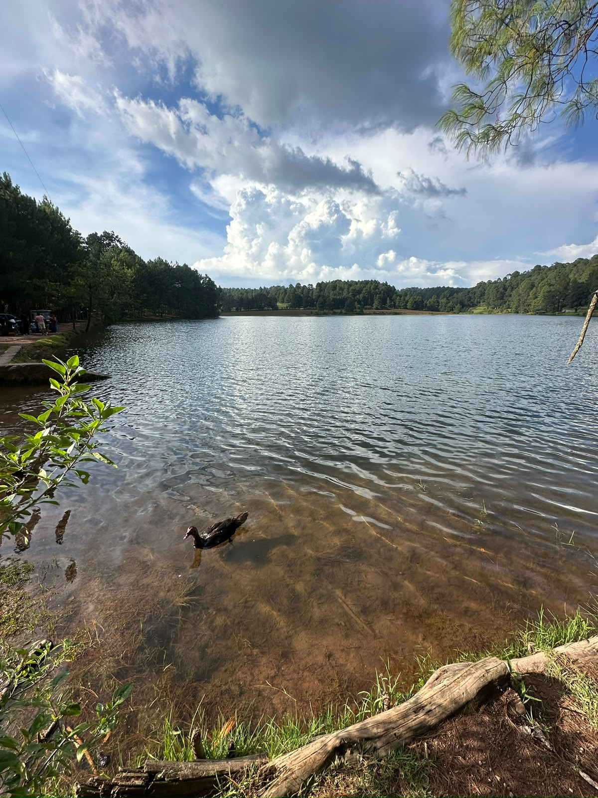

Laguna Negra es descrita como un lago semi virgen rodeado de bosque y naturaleza pura, poco explorado y perfecto para actividades de aventura. Es uno de los destinos naturales más llamativos de la zona, según múltiples rutas y videos de exploración.
La Laguna Negra es un pequeño y tranquilo cuerpo de agua rodeado de un denso bosque de pino y encino, ubicado en la zona montañosa cercana a Valle de Bravo, hacia el área de El Pinal del Marquesado y Zacazonapan. Recibe su nombre debido a que la sombra de los altos árboles sobre su superficie oscura crea reflejos profundos y un ambiente silencioso en medio de la naturaleza.
Actividades principales:
*Senderismo y caminata: Puedes recorrer el Circuito Laguna Negra en AllTrails, una ruta circular de dificultad moderada y unos 10 kilómetros que bordea la laguna entre helechos, musgos y líquenes. También es posible conectar con la ruta hacia Los Pozos.
*Rutas en RZR y cuatrimotos: Es uno de los destinos favoritos para excursiones todoterreno a través de brechas boscosas y caminos con lodo o arroyos, operadas por agencias locales como Explora Valle.
*Ciclismo de montaña (MTB): Sus senderos de tierra, subidas prolongadas y caminos anchos son muy utilizados para rodar en bicicleta, con rutas documentadas desde el centro de Valle de Bravo en plataformas como Wikiloc.
Observación de flora y fauna: En el recorrido es habitual avistar ardillas grises y escuchar aves como el carpintero de bellota entre las copas de los árboles.
